There are three areas currently in my Photo Album:
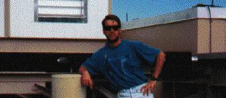That's me at the IOTA site south of Tucson, AZ, during the Fall 1994 system upgrades. I'm looking a little scruffy; when this photograph was taken, I'd been on site for over three weeks doing your typical observatory activities - milling in the machine shop, heavy construction, and some plumbing. Behind me is the 'dome' for the short arm telescope (our 15 m long NW/SE arm). My arm is resting on one of the many piers we have for setting down the telescopes at their stations. To my left and behind me is a corner of the control building.
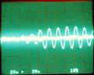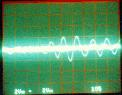FRINGES! As pictured on the oscilliscope during a data collection sequence, a single fringe packet is captured in these one second time exposures, clearly rising above the noise. During a typical night, we collect approximately 2,000 fringe packets at IOTA. These particular fringe packets were collected during our March 1996 run to the site. Note the atmospheric phase glitch on the packet to the right, while the scan on the left appears to be much cleaner.
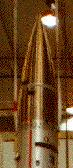While I was with The Johns Hopkins University, I worked with the Sounding Rocket Group. This is a picture of the payload section of a rocket I worked on undergoing Flight Readiness Testing while we were at NASA's Wallops Flight Facility during Fall of 1992. This particular test pictured was the spin test. The flight designation of this particular flight, which eventually flew out of White Sands Missile Range, NM, was 36.085.
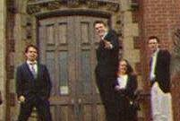Also
in 1994, I attended the wedding of my friends Monica Blykowski and Dave
May, in Seattle. Pictured here are my friends John Ruble, Jeff Johnstone,
Jennifer Fredrickson, and Scott Bourn.
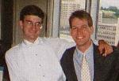And
here's the blushing groom himself, along with me.
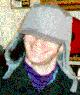When
I think of my friend David
Ciardi, the phrase 'distinguished' comes to mind ... or something like
that! Apparently my head is slightly larger than his (strictly circumference
here), so my hats don't fit him too well, as evidenced here.
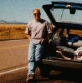My
officemate, Bob Thompson,
& I traveled down to IOTA this past March (1996) for a data collection
run. Along the way we drove by the Very Large Array of the National Radio
Astronomy Observatory and did some astronomer-type sightseeing. In the
photo, note the radio telescope apertures off in the distance to Bob's
right (the picture's left).
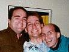In
May of 1995, my good friend and former college roommate Dave Marshall came
to visit me in Laramie. Here he and David
Ciardi have me in a 'Dave Sandwich' (hold the mayo!)
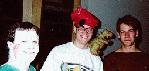When
I was back at The Johns Hopkins University,
we would have the occasional physicist party - yes, a scary concept. Here
I am with James Gerald and John Freeland at a Halloween party in 1992.
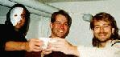Being
at The University of Wyoming has done
little to change that trend - here's Halloween of 1995 with fellow physicists
David Harker and John Medberry.
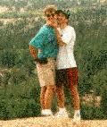Here's me and my buddy David Ciardi clambering around on rocks at Vedawoo, near our home in Laramie, WY. The view is absolutely breathtaking from up among the rocks, but don't try doing much bouldering unless you've acclimatized to the altitude (8,000+ feet). David & I are residents of Laramie (elevation: 7,500 feet), so it's no problem. Comes in handy for us wandering astronomer types...!
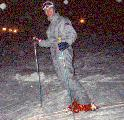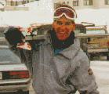Although
I'm a poor graduate student, I always enjoy to sneak in skiing whenever
I can justify the reckless disposal of large quantities of cash. On the
left picture, I'm out skiing with my buddy Dave Marshall at Snoqualmie
Pass, just above my hometown of Seattle, during Christmas of 1993. The
night skiing resulted in a bent pole... On the left picture, a day of hookey
this past January (1996) resulted in a quick trip down to Steamboat Springs
from my place in Laramie, WY. Although perhaps a rash use of time better
spent on research, I did take along a member of my Ph.D. committee, Ron
Canterna, and also fellow grad student Nor Pirzkal. Note that an absolutely
abysmal run on 'Rolex' at Steamboat resulted in a bent pole (brand new,
too - seeing a trend here?)
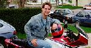Having
braved the initial investment, owning a motorcycle for me is the cheap
& easy way to live out on the edge. My bike is a '85 Honda Interceptor
500 - nothing too fast, but fun nonetheless. It's a unique bike
(very few V4s on the road aside from the VFR series), rather pretty (it's
been pampered and the aftermarket lower fairing helps), and (knock on wood)
I have yet to get a ticket on it.
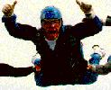For
when owning a motorcycle just won't satisfy that primal death wish, try
skydiving. I wholeheartedly recommend the Advanced Freefall Class - somehow
hurtling towards the ground from 11,000 feet (here done above Chambersburg,
PA) tends to give a tad bit more of an adreniline fix than can be found
doing anything else. (As far as filling out that organ donor card
- a responsible must with respect to the motorcycle - don't bother with
skydiving...)
Other ridiculous things I'm been found doing that I don't have photos of, yet: scuba diving, windsurfing, racquetball and volleyball (hey, I like to keep myself busy!)
{kind=link}
{kind=link}
{kind=link}
{kind=link}
{kind=link}
{kind=link}
{kind=link}
{kind=link}
{kind=link}
{kind=link}
{kind=link}
{kind=link}
{kind=link}
{kind=link}
{kind=link}
{kind=link}